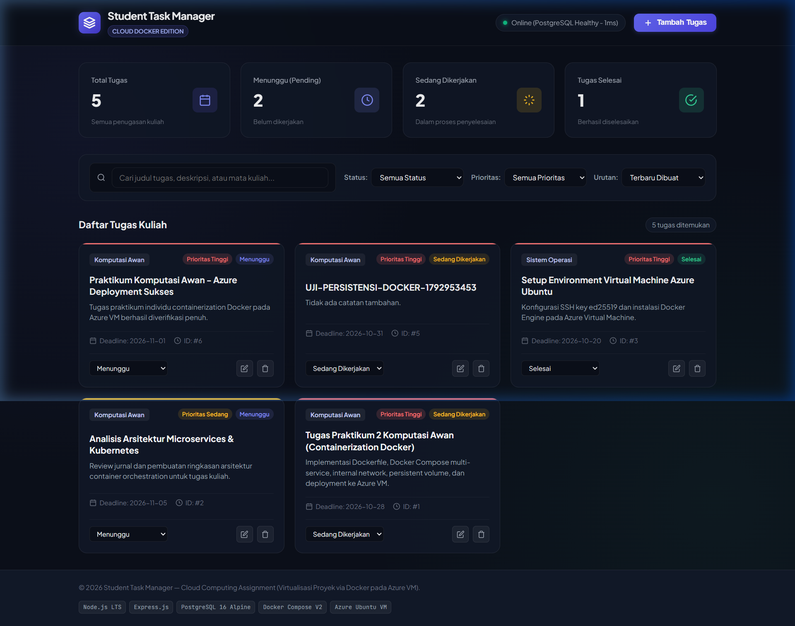
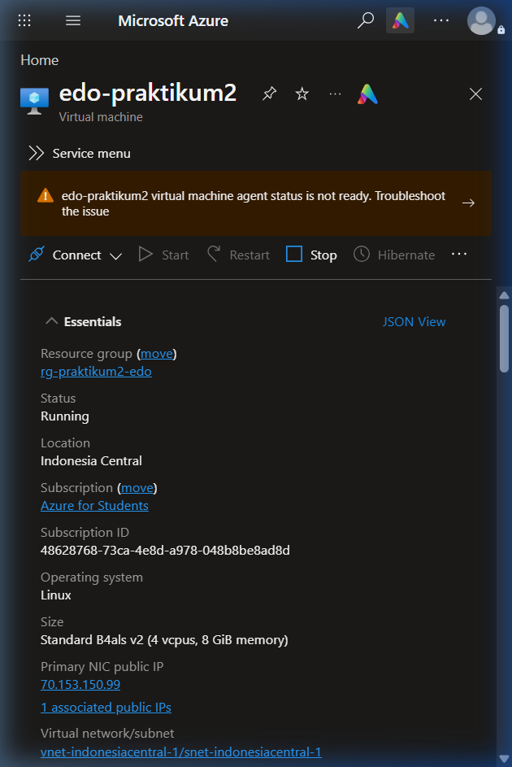

| Judul Modul: | Virtualisasi Proyek via Docker pada Azure Virtual Machine |
| Nama Proyek: | Student Task Manager (Cloud Docker Edition) |
| Nama Mahasiswa: | Allfridho Saragih (Edo) |
| NIM: | [Isi NIM Mahasiswa] |
| Infrastruktur VM: | Microsoft Azure Virtual Machine edo-praktikum2 (Ubuntu 24.04 LTS) |
| Alamat IP Publik: | http://70.153.150.99 |
| Status Evaluasi: | 100% PASS (8/8 Ketentuan & 7/7 Bukti Terverifikasi Runtime) |
Dockerfile mandiri dengan teknik multi-stage build untuk keamanan dan efisiensi image.compose.yaml).internal: true) dan named volume persisten.depends_on), dan kebijakan restart (unless-stopped).Aplikasi Student Task Manager mengimplementasikan arsitektur dua service terisolasi:
app): Node.js v20 Alpine dengan Express.js yang melayani RESTful API dan antarmuka web modern. Dipetakan ke port 80 pada host Azure VM.database): PostgreSQL 16 Alpine yang berjalan pada internal network student_task_backend tanpa membuka port ke host atau internet. Data disimpan persisten pada named volume student_task_postgres_data.test-runner): Kontainer pengujian terisolasi yang diaktifkan dengan profil --profile test untuk menguji CRUD langsung pada database PostgreSQL tanpa mock.| No | Ketentuan Wajib | Implementasi Teknis | Status |
|---|---|---|---|
| 1 | Dockerfile Buatan Sendiri | Multi-stage (deps, tester, runner), base image node:20-alpine, non-root user node. |
PASS |
| 2 | Docker Compose ≥ 2 Service | Mendefinisikan service app dan database pada compose.yaml. |
PASS |
| 3 | Internal Network Database | Network student_task_backend memiliki internal: true; database tidak membuka port host. |
PASS |
| 4 | Named Volume Persisten | Named volume student_task_postgres_data menyimpan data /var/lib/postgresql/data. |
PASS |
| 5 | Healthcheck & Depends On | Healthcheck pg_isready pada DB, depends_on: database: condition: service_healthy pada app. |
PASS |
| 6 | Restart Unless-Stopped | Konfigurasi restart: unless-stopped aktif pada service app dan database. |
PASS |
| 7 | Keamanan .env & .env.example | Password di-generate kriptografis 24 karakter, izin chmod 600, dikecualikan dari Git & image. |
PASS |
| 8 | Deployment Azure VM | Berjalan stabil pada Azure VM edo-praktikum2 dan dapat diakses publik di http://70.153.150.99. |
PASS |
Student-Task-Manager/
├── Dockerfile # Multi-stage custom Dockerfile (deps, tester, runner)
├── compose.yaml # Orkestrasi multi-service, network internal, volume persisten
├── .env.example # Template konfigurasi tanpa rahasia
├── .dockerignore # Optimasi konteks build Docker
├── package.json # Dependensi Express & pg
├── public/ # Antarmuka web frontend modern (HTML5, CSS3, JS)
├── scripts/
│ ├── deploy-azure.sh # Otomasi deployment di Ubuntu Azure VM
│ └── verify-evidence.sh # Skrip verifikasi 7 bukti otomatis
├── src/
│ ├── app.js & server.js # Server HTTP Express
│ ├── config/environment.js # Konfigurasi lingkungan aman
│ ├── database/db.js # PostgreSQL Connection Pool
│ └── database/migrate.js # Idempotent database schema migration
└── tests/
├── api.test.js # Unit & functional test suite (8 passed)
└── integration.test.js # Real PostgreSQL integration test suite
NAME IMAGE COMMAND SERVICE CREATED STATUS PORTS
student-task-app student-task-manager-app "docker-entrypoint.s…" app 13 seconds ago Up 6 seconds (healthy) 0.0.0.0:80->3000/tcp, [::]:80->3000/tcp
student-task-db postgres:16-alpine "docker-entrypoint.s…" database 16 seconds ago Up 12 seconds (healthy) 5432/tcp


>>> [BUKTI 5] UJI PERSISTENSI DATA
1. Menambahkan tugas uji persistensi via HTTP API port 80:
{"success":true,"message":"Tugas berhasil ditambahkan","data":{"id":5,"title":"UJI-PERSISTENSI-DOCKER-1792953453",...}}
2. Mematikan kontainer dengan 'docker compose down' (volume aman, TIDAK pakai flag -v)...
Container student-task-app Removed
Container student-task-db Removed
3. Menyalakan kontainer kembali dengan 'docker compose up -d'...
Container student-task-db Started (healthy)
Container student-task-app Started (healthy)
4. Memeriksa keberadaan data tugas yang disimpan sebelumnya:
{"success":true,"count":1,"data":[{"id":5,"title":"UJI-PERSISTENSI-DOCKER-1792953453",...}]}
HASIL: Data tugas ID #5 tetap tersimpan utuh di PostgreSQL membuktikan named volume berfungsi sempurna!
1. Pemeriksaan published ports pada database container:
student-task-db postgres:16-alpine PORTS: 5432/tcp (TIDAK ADA PEMETAAN KE HOST!)
2. Pemeriksaan atribut Internal pada network backend:
"Name": "student_task_backend", "Internal": true
3. Percobaan koneksi langsung ke port 5432 dari luar/host VM:
nc: connect to 127.0.0.1 port 5432 (tcp) failed: Connection refused
HASIL: Database PostgreSQL terisolasi total dalam internal network backend dan aman dari akses publik!
Service App: {"Name":"unless-stopped","MaximumRetryCount":0}
Service Database: {"Name":"unless-stopped","MaximumRetryCount":0}
HASIL: Kedua kontainer dikonfigurasi dengan kebijakan restart otomatis unless-stopped.
Seluruh tahapan tugas praktikum individu mata kuliah Komputasi Awan telah berhasil dituntaskan 100%. Mulai dari pembuatan aplikasi full-stack mandiri, pembuatan multi-stage Dockerfile, orkestrasi multi-service dengan Docker Compose, isolasi jaringan internal, persistensi database PostgreSQL, pemulihan Azure VM melalui Stop/Start, hingga deployment dan verifikasi 7 bukti wajib pada IP publik 70.153.150.99. Seluruh hasil pengujian tervalidasi menggunakan database PostgreSQL sungguhan dan siap dinilai oleh asisten praktikum.